Making Sense of Climate Change and Policy
EES 3310/5310
Global Climate Change
Jonathan Gilligan
Class #20: Friday, Oct. 5 2018
PDF: https://ees3310.jgilligan.org/Slides/Class_20/EES_3310_5310_Class_20_Slides.pdf Navigate slides: next: N or <space>; previous: P or <backspace>
Also: up, down, left, right arrows; overview: o; help: ?
Announcement:
Monday Oct. 8, Ms. Best will lead the class.
Can We
Trust the Experts?
Can We
Trust the Experts?
Did temperatures stop rising 18 years ago?
Look at 1970–2014
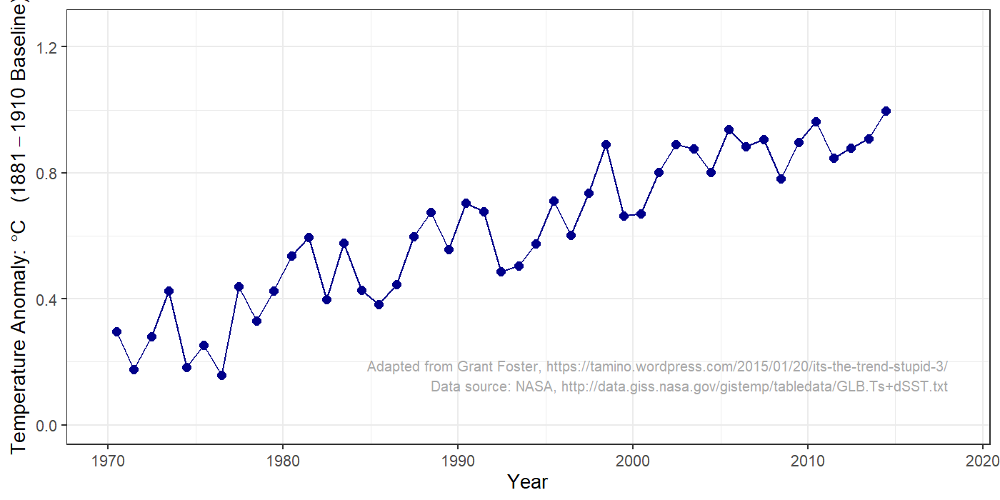
Did temperatures stop rising?
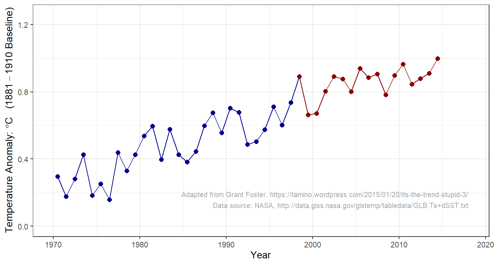
Did temperatures stop rising?
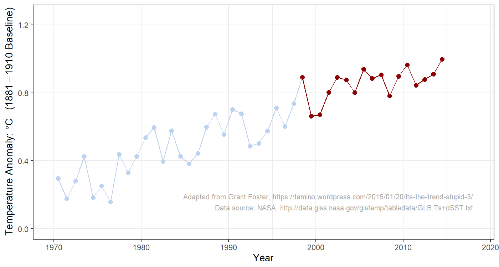
Did temperatures stop rising?
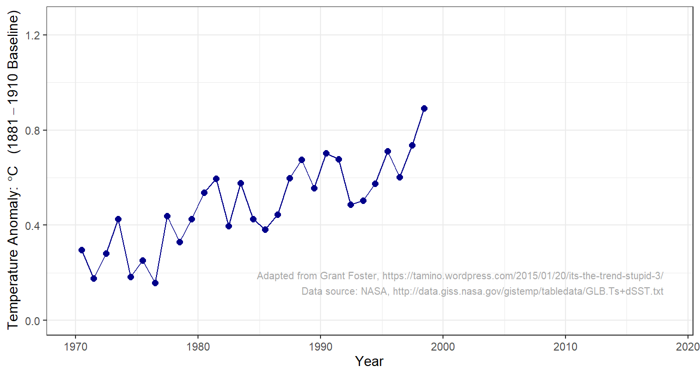
Did temperatures stop rising?
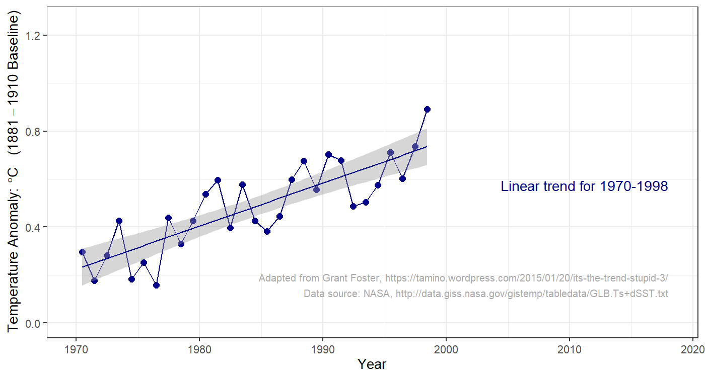
Did temperatures stop rising?
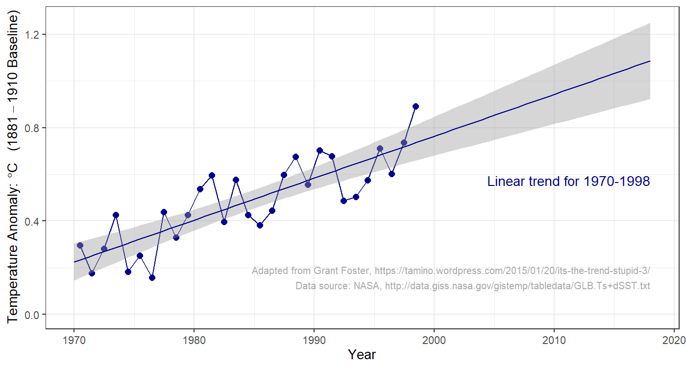
Did temperatures stop rising?
Did temperatures stop rising?
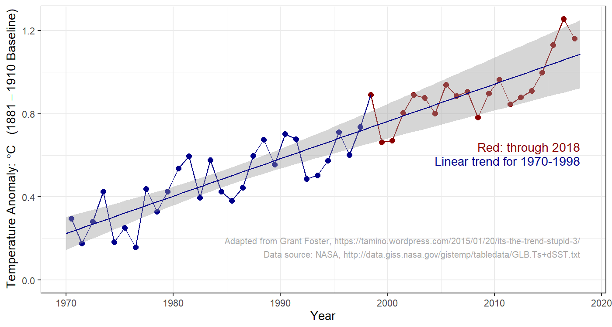
What is the Scientific Consensus?
What is the Scientific Consensus?
- Is there a consensus?
- If there is, should we trust it?
What is the Scientific Consensus?
- Is it important whether most scientists agree or not?
- What if some scientists disagree?
- Do most scientists agree?
- Careful reviews of scientific literature find 95% of scientists publishing about climate change believe planet is warming because of human activity.
Dissident Scientists
| 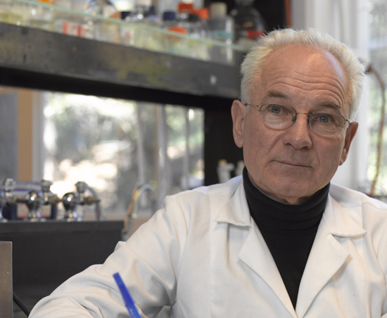 |
Peter Duesberg
|
| 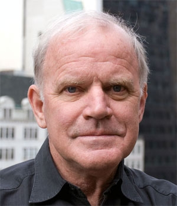 |
Kary Mullis
|
Meaning of Consensus
- Does scientific consensus mean we can be
100% certain that people are warming the planet? - What about the future impacts of climate change?
What Gets in the Way of Policy?
What Gets in the Way of Policy?
- Politicians don’t understand science?
- Public doesn’t understand science?
- Scientists don’t understand politics?
Issues for Policy
- What do scientists agree on?
- Should policy focus on CO2?
- Should policy focus on limits to CO2 or \(\Delta T\)?
- Should policy wait for better scientific certainty?
- Uncertainty:
- How much warming is “dangerous”?
- How much CO2 would produce dangerous warming?
- Are there tipping points?
- If so, where are they?
1979 Report
Carbon Dioxide and Climate:
A Scientific Assessment
The conclusions of this brief but intense investigation may be comforting to scientists but disturbing to policymakers. If carbon dioxide continues to increase, the study group finds no reason to doubt that climate changes will result and no reason to believe that these changes will be negligible. … A wait-and-see policy may mean waiting until it is too late.
National Research Council, Carbon Dioxide and Climate:
A Scientific Assessment (Nat’l. Academy Press, 1979)
Pielke and Nordhaus
Pielke and Nordhaus
Pielke:
Although some scientists believe that there may be “tipping points” … no one knows if or when there might be a threshold effect.
Nordhaus:
Humans are in effect spinning the roulette wheel when we inject CO2 and other gases into the atmosphere. The balls may land in the favorable black pockets or in the unfavorable red pockets, or possibly in the dangerous zero or double-zero pockets.
Principles of Tipping Points
- Ordinary positive feedbacks amplify changes
(hot → hotter, cold → colder).- Small positive feedbacks amplify but the system remains stable.
- If positive feedbacks are too strong they become self-perpetuating.
- Secondary forcing from feedback creates unstoppable change.
- If feedback strengthens with warming:
- Tipping point: feedback becomes strong enough
to continue warming independent of external forcing.
- Tipping point: feedback becomes strong enough
- Not all positive feedbacks have tipping points.
- Hard to predict when a positive feedback might go from amplifying to runaway (tipping point).
Goals for Climate Policy
Goals for Climate Policy
- Limit temperature rise?
- Limit greenhouse gas concentrations?
- Focus only on CO2?
- Focus broadly on all kinds of climate change (natural and human)?
- What do Pielke and Nordhaus say about these questions?
- What do you think?
Pielke:
“A narrow focus on carbon dioxide is double-edged: it gives priority to a very important aspect …, but it can obscure the fact that … climate change involves so much more.”
Scientific Uncertainty
- How does scientific uncertainty affect policy?
- Should we wait for more certainty before acting?
- What do Pielke and Nordhaus say?
- What do you think?
Nordhaus:
“A sensible policy would pay an insurance premium to avoid playing the roulette wheel.”
“The cost of delaying action for 50 years … is [estimated] as $6.5 trillion.”
Pielke:
“Policy makers routinely make decisions … with a similar (or even less well-developed) state of understanding.”
Bathtub model
Bathtub model

Bathtub model
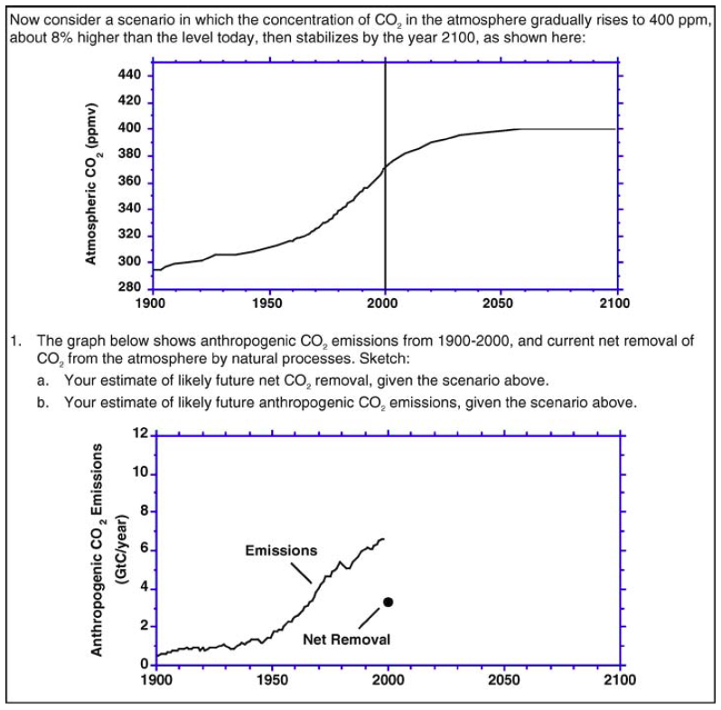
Bathtub model
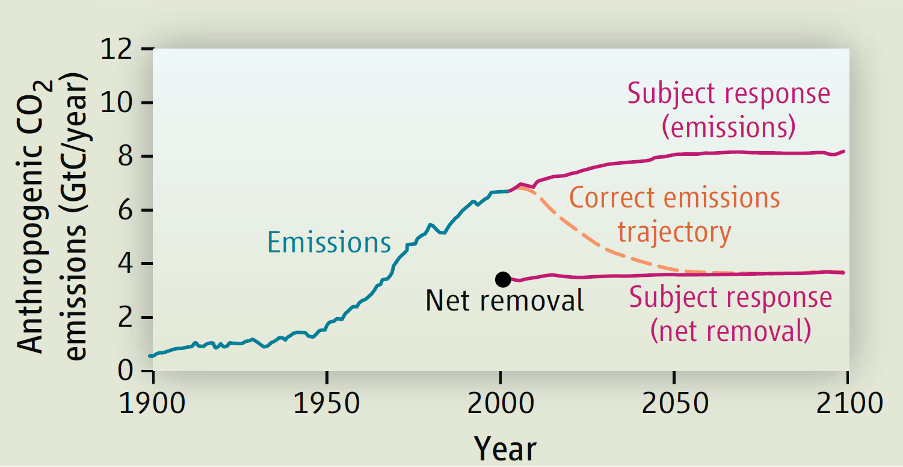
212 MIT MBA and graduate students.
60% majored in science or engineering
J.D. Sterman, Science 322, 532 (2008).